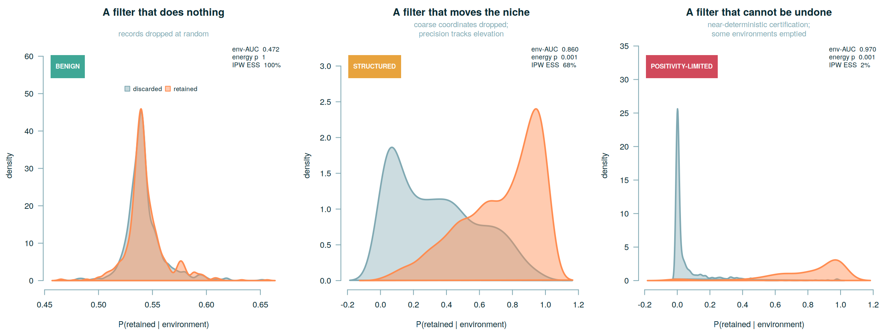

Cleaning occurrence data is a modelling decision. This package measures what it did.
The problem
Before fitting a species distribution model, almost everyone filters the occurrence records: drop the ones with coarse coordinates, keep the ones with good ones. The step is so routine that it is not usually reported as a choice at all. It is treated as hygiene.
It is only hygiene if record quality is unrelated to the environment. It usually isn’t. Georeferencing precision depends on terrain, accessibility, mapping density and the era a record was collected in — and all of those vary across environmental space. So the records that survive a quality cut are not a random environmental sample of the records that were collected. Dropping the rest shifts the environmental distribution the model learns from.
Filtering is then not cleaning. It is a covariate-shift operation, and it biases the fitted niche in exactly the way uneven survey effort does — a problem the field has taken seriously for twenty years and routinely corrects.
There are good R packages that decide which records to remove. There is nothing that tells you what removing them did. That is the gap this package fills.

Three filters. Three verdicts. Each licenses a different next step, and none of them is ‘the data are clean now’.
What it does
# install.packages("remotes")
remotes::install_github("KristianMiok/TrustworthySDM")
library(TrustworthySDM)
d <- sim_occ(n = 1500, seed = 7)
a <- audit(
d,
quality = "keep_precision", # TRUE = the filter kept it
env = c("bio1", "bio12", "elev"), # environment at each record
metadata = c("year", "source"), # optional, but see below
spatial_block = "basin" # blocks the cross-validation
)
summary(a)Audit of quality filter `keep_precision`
------------------------------------------------------------------
1,500 records with complete environment; 833 retained (55.5%).
1. Which axes moved
elev smd +0.542 KS 0.408 log-var-ratio -0.003 *
bio1 smd -0.518 KS 0.393 log-var-ratio +0.001 *
bio12 smd +0.505 KS 0.386 log-var-ratio -0.010 *
2. Did the niche move at all
energy distance 34.084, permutation p = <= 0.001
3. Is the structure environmental, or is it provenance
env-AUC 0.860 (blocked by `basin`)
metadata-AUC 0.641 (usually high: the filter was DEFINED on metadata;
this is a sanity check, not a finding)
incremental env +0.234 (environmental structure surviving provenance)
4. Can it be undone
IPW effective sample size 571 = 68.5% of the retained records
VERDICT: STRUCTURED
------------------------------------------------------------------Four numbers, and each of them licenses a different action.
| what it reports | what it answers |
|---|---|
| per-axis SMD, KS, variance ratio | which environmental axes the filter moved, and which way |
| energy distance + permutation test | whether the niche moved at all, without assuming a model |
| propensity AUC: env / metadata / both | whether the shift is environmental or just an artefact of who collected what, when |
| effective sample size of the IPW weights | whether reweighting can undo it, or whether the filter emptied environments that no weight can refill |
The verdict is one of benign, structured, or positivity-limited, and summary() says what each one licenses you to do next.
What it will not do
It will not tell you which way to correct.
Hard filtering and inverse-propensity weighting move the estimated niche in opposite directions and bracket the truth between them. Which end is right depends on whether coordinate error is directed — whether mislocated records are pushed systematically toward particular environments, or merely scattered — and that is not identifiable from occurrence data alone.
So the honest output of an audit is the width of the bracket, not a point estimate. Fit both ends. A conclusion that survives the whole bracket is a result. One that does not is a choice you made without noticing.
Design notes
Zero hard dependencies. Only stats, graphics, grDevices, utils. The Székely–Rizzo energy statistic is implemented in base R and tested for numerical identity against the energy package, which is used in the test suite and nowhere else. Nothing here should ever fail to install.
Quadratic propensity terms are on by default, and should stay on. A filter that removes environmental outliers trims both tails symmetrically. It moves no mean, so it passes an SMD screen. It can fail to reach significance on an energy test. And a linear propensity model does not merely miss it — on simulated data such a model was anti-predictive out of fold in 34 of 50 fold draws (mean AUC 0.42, range 0.25–0.62), while the quadratic model reached 0.78. A one-sided AUC > 0.6 screen on a linear model would therefore report benign for one of the most damaging filters there is. sim_occ() ships that filter as keep_outlier precisely so that this cannot be quietly regressed.
The verdict is deliberately asymmetric. Shift is declared if any of the three screens fires, not if all of them agree. That makes the audit quick to raise an alarm and slow to give reassurance. In a reliability audit that is the right asymmetry — but it is an editorial choice, and the numbers are all there so you can make a different one.
Thresholds are conventions, not truths. See audit_control(). Report the numbers, not only the verdict.